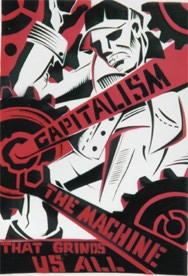

Interview: The IWW and the Ottawa Panhandlers Union
Submitted on Tue, 01/29/2008 - 1:10pm
Disclaimer - The opinions of the author do not necessarily match those of the IWW. The image pictured to the right did not appear in the original article, we have added it here to provide a visual perspective. This article is reposted in accordance to Fair Use guidelines.
By Dave - originally posted to anarkismo.net, January 27, 2008
 (Dave interviewed Ottawa anarchist Andrew Nellis for Linchpin. Andrew is an organizer with the Ottawa Panhandlers Union.)
Q. What is the Ottawa Panhandlers Union and how was it started?
A. The Ottawa Panhandlers Union is a shop of the Industrial Workers of
the World (IWW). It's a real union. What we do is run by the
panhandlers themselves. The IWW has one paid member for the entire
union. It's entirely member run. The idea is to empower people on the
street to fight for themselves.
Ideally despite coming in as an outside organizer I'll be able to step
out of the picture once the organization is up and running and there's
a structure in place to ensure that the organization continues. I was
on the street myself. I'm not on the street now. So I do know something
about the milieu in which I'm working.
Ideally it [the Panhandlers Union] should be run by people who are
actually on the street but in practice we find that our most valuable
members are those who have just come off the street or are in the
process of getting off the streets. Their lives are somewhat less
chaotic than people who are actually on the street although we do have
some [key] people who are hardcore street. It always impresses me. I'm
so proud of all of these people. For example, the guy who writes our
press releases has to leave the room every 15 minutes or so to take a
sip of hand sanitizer As you may be aware people who are heavily
addicted to alcohol stand a one in three chance of death if they go
through withdrawal so they have to drink alcohol continuously just to
survive The fact that someone who is dealing with this many crises in
his own life is capable of not only functioning but contributing
something to the welfare of others around him. It's just really
humbling for me to work with someone like that considering the many
sacrifices that he's got to be making in his own life are so much
larger than anything I'm expected to give.
Q Could you give some examples of some of the problems that are faced
by panhandlers and homeless people in Ottawa that the Panhandlers Union
was formed to help resist.
A I can tell you that although things were bad before the new police
chief, they've become infinitely worse since. The new police chief has
the "broken windows" philosophy. He believes that you can stop big
crimes by stopping little crimes. He's ordered his police officers to
stop issuing tickets and begin arresting panhandlers. It costs $185 a
day to keep someone in jail and they're more than willing to pay that
to keep panhandlers off the street than providing supported housing is
infinitely cheaper they prefer using enforcement for something it was
never designed to do.
We were forced to start a Copwatch program because the police are
openly and blatantly breaking the law. We have had many cases where its
been reported to us that the police have stolen the panhandlers' money,
roughed them up, and told them not to come back or they'd be beaten.
One night I had to start guard under the bridge by the Rideau Centre
because the street kids there had been informed by a police officer
that if they were there when he came back he was going to - and I quote
- "boot-fuck" them. So I went there with a recorder and I warned the
police that I'd be there all night with my recorder. This is the kind
of stuff that we do.
We do a lot of advocacy work. We have one member who is schizophrenic
and he was picked up in an ambulance and he was [held] involuntarily at
the Montfort Hospital in their psychiatric wing. And he requested our
assistance in getting his doctors to agree to let him go to school
since he has a law degree from Russia and he's in the process of
updating his credentials here in Canada. His doctors were concerned
about letting him go by himself to his classes so we went there to tell
them that we'd have a person willing to go with him to the classes if
necessary to assure them that he wouldn't be a danger to himself or
others. What was particularly gratifying for me was that while the
doctors did not want to talk to us, it took us several hours to
buttonhole the doctor, once he heard the name Industrial Workers of the
World, he was at great pains to assure us that that they very sensitive
to his cultural and religious needs, and that they were not
discriminating against him. When I tried to get a word in edgewise to
assure him we were not there to complain about his treatment but to
make sure that he was able to attend his classes.
This is the kind of work that we do. A lot of it is in the background.
A lot of people think that because our most visible efforts revolve
around things like marching in the street, or egging the BIA that this
is [all of] what we do. In fact 99% of what we do is just quiet support
work for the streets that particularly teaches people where to go, how
to wend their way through the paperwork of police complaints, to make
sure they turn in their tickets [under the Safe Streets Act] to the
Ticket Defense Program and see benefits of what standing together can
do.
We have one member right now who is an organizer with the IWW. He came
to us because he had been beaten up by Rideau Centre security.
Immediately after getting out of the hospital, he contacted us. We got
our video cameras and documented his injuries, I got him in contact
with a lawyer, Yavar Hamid. As a result, we sued the Rideau Centre in
superior court for $70,000. The Rideau Centre settled.
Q. How is the Panhandlers Union structured internally?
A. The IWW is not an anarchist organization. Our constitution actually
forbids us as members from promoting and political or anti- political
party. The organization itself runs in an anarchist manner. We have no
hierarchy. At meetings everybody takes turns, everybody is expected to
be either ther chair or recording secretary and at every meeting it
changes so that everybody gets to see and develop the skills necessary
for running a meeting. It’s very important for the continuation of the
kinds of traditions that we are trying to build for the organization.
or many people this the first time they’ve ever had any responsibility
in a social sense, and its very gratifying to see someone who started
out at the beginning of a meeting very nervous and unsure of themselves
actually telling someone like me to shut up and let other people talk.
Q. Earlier [before the interview] we were talking about the backlash
that has been felt by the Panhandlers Union and yourself. Could tell me
a little about that?
A. We’ve experienced some amount of backlash from the police towards
the organization. It’s become particularly bad lately since we’ve
started the Copwatch program. It started in earnest perhaps a year ago
when someone logging in from the Regional Municipality of Ottawa
Carleton [IP address] vandalized Panhandlers Union Wikipedia article
saying that “Mr. Nellis,” that is myself, “really, really, really needs
to get a life” and saying that the members of this union are a
“parasitical blight on the city of Ottawa.” These changes were edited
back fairly quickly but it was only discovered as a result of the
release of the Wiki Scanner tool. The official response from City Hall
was “No Comment.” I’ve subsequently discovered that the police use the
same system that City Hall do. Whoever made these changes might well
have been within the police station as well as inside City Hall.
Since then there have been posters put up on Ottawa city streets saying
things like “Don’t feed the human pigeons” This is in response to Mayor
Larry O’Brien’s statement in which he compared panhandlers to pigeons
stating that if you don’t feed them they’ll go away. During the
election campaign he [O’Brien] compared panhandlers to seagulls at the
Carp Dump saying that in order to keep the seagulls away, occasionally
you have to shoot one.
The second set of posters that went up, we believe by the same people,
featured myself with a gun in my mouth in a circle with a line through
it saying “Panhandlers follow your leader” with [a picture of] the
mayor standing in the background grinning. I can only take this as a
death threat.
We’ve recently had the Panhandlers Union [Wikipedia] articles deleted
by a false flag campaign launched by someone who also we believe
hijacked my internet account. Someone contacted Sympatico, my ISP,
identified themselves as me and asked for my password. We know that
that the first time this did not work because Sympatico Security
contacted me to tell me my password which I informed at the time them
that it was not me [requesting the information]. We put a special
password on my account which was supposed to prevent anything like this
from happening and which would require the person to give a password to
identify themselves as me if they called. Apparently this did not work
because within a couple of weeks someone had hijacked my e-mail,
deleted a week worth of personal e-mail, vandalized my blog, attacked
an anarchist IRC channel I founded and helped facilitate, and generally
made my life very miserable on the internet. Whoever did this used
servers they had hijacked in Pakistan and Hong Kong.
The Wikipedia campaign to delete the Panhandlers Union article –
someone identified themselves in the discussion as a member of the
Panhandlers Union, gave details of his arrest records, the fact that he
was Hepatitis C positive, details that only the police would know about
this man. We know it was not the panhandler himself who posted this
because he was at the time homeless. And we know that whoever posted
this was [also] using servers in Pakistan and Hong Kong. We have reason
to believe it was the same person [who hacked Andrew’s internet
account] who posted these messages. And in these messages he ranted
about fascists and police and said that he had voted numerous times to
keep the article. This gave Wikipedia administrators the excuse to
delete the article out of hand by ignoring all calls to keep it. The
Wikipedia article is currently deleted and no record of it ever having
existed remains including the evidence that the City of Ottawa or the
police had vandalized it.
Q. Do you think that the Panhandlers Union in Ottawa is a model that
could be applied to other cities? Has there been interest in trying to
develop Panhandlers Unions in other cities?
A. Yes. In fact I’ve been in a number of presentations on street
organizing. It’s a very different milieu from what most organizers are
used to. The street has its own rules. It’s stylized and ritualized not
all that different than lets say a medieval Chinese court. It’s a very
different place.
When you’re dealing with people as oppressed as people on the street
are, it’s extremely important not to come across as an authority
figure. Often the temptation is there to present yourself as leader and
this must be resisted at all costs because the street will try to turn
a person into a personality and it will become a cult of personality in
which the personality is more important than the movement. While there
can be short term results, eventually the organization falls apart when
this person leaves.
The street is extremely hierarchical. There is usually a dominant alpha
male. It’s very patriarchal. Often it’s racist and homophobic. I should
add that it’s probably no more so than any other sector of society but
because people live much closer to the bone there’s not as much lying
about it. People are very straightforward about their prejudices.
So because of all these things which exist on the street, it’s
important that the organizer establish from the very beginning that its
about the organizational structure and that its not about the
individual. If it’s about the individual, the structure is never going
to survive. The reason to have an organizer when one is organizing on
the street is to make sure that there is a structure.
The entire reason [many] people are on the street is that they cannot
live in a highly structured scenario. There is nothing wrong with this
but it is very difficult to keep an organization going when there is no
structure to it. In order to ensure that it survives it’s necessary to
create a tradition. And this takes many, many years. There is no short
way to do this. And the way you do this is by giving people successes,
by showing them that what you’re doing works. On the street people
don’t have enough resources to take risks so they tend to do what works
for them. If it's already working they are loathe to change it. In a
very real sense they are very conservative. In order to break through
this it is necessary to give them successes and show them that working
together is better than working by themselves. The only way to do that
is by slowly building people’s trust and to show them that if they work
together there is an advantage to them personally.
Q. Could you tell me a about your own politics and how you became an anarchist.
A. I identify as an anarcho-syndicalist and I am a member of the IWW. I
believe that the union structure provides a very viable means of
building resistance to the current system. Anarcho-syndicalism I
believe is important because it will not only allow us to build an army
within capitalism itself while continuing to function but will allow us
to create a structure which will continue to exist when capitalism will
have been destroyed.
A lot of the problem we face is that there’s always a sense of
immediacy. We’re always looking at the next battle and never at the
longer strategic plan. And we see the results of that in what’s
happened thus far in anarchist movements. For example in Spain and the
Ukraine where people were not careful about who they chose as allies and
were crushed as a result. Anarchists have a history of winning on the
battlefield and losing in the halls of power. I think its very
important that we develop long-term strategic plans for dealing with
our success rather than planning for our failures.
Q. What do you see as some of the strengths and weaknesses of anarchist organizing in Ottawa?
A. It’s interesting. I often get the feeling from anarchists that they
really don’t believe that anarchism works. It’s a strange thing to say
but often people seem to feel that anarchism is something you need to
weave life into, that it requires extra effort to put a slather of
anarchism across whatever structure it is that they create but it gives
me a feeling that people don’t have faith that anarchism itself works.
It’s not a chore that you need to apply to whatever it is you’re
actually doing. Anarchism works. I’ve seen it in action. I’ve seen
people who are oppressed and beaten down and frightened empowered by
what anarchism has done for them. I’ve seen people on the street who’ve
literally been beaten down. We have a man who was beaten so badly be
Rideau Centre security that he nearly lost the use of his eye and yet
through solidarity through what he saw anarchism was able to do for him
he is now today an anarchist organizer himself. And its gratifying to
see that he’s taken control of his life. He has a good paying job. He
has a permanent home. And he’s using these advantages now to teach
other people the value of anarchist organizing. These techniques don’t
need to be grudgingly applied. They need to be lovingly embraced. They
work. If you actually use them they work. It is such a thrill the first
time you see it actually working, not just in theory but in practice.
It’s easy to see why those original anarchists were so passionate why
they continued to work into their eighties and nineties why they sang
on the gallows, because anarchism is a revolutionary idea in every
sense of the word. It gives a person such joy to see that it is capable
of empowering people to take control of their own lives.
Abbie Hoffman said that a revolution in consciousness is an empty high
without a revolution in the distribution of power and that’s perfectly
true and valid but the opposite is also true. A revolution in the
distribution of power will be meaningless unless there’s also a
revolution in consciousness, It starts inside and continues on into the
world outside of us.